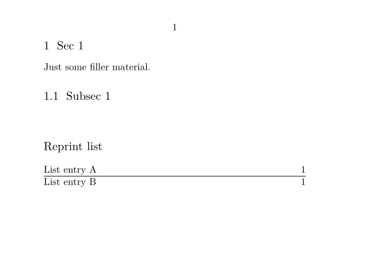

Contents
Summary
The command
\definelist
defines lists like those used in ToCs.
Settings
| \definelist[...][...][...=...,...] | |
| [...] | name |
| [...] | list |
| ...=...,... | inherits from \setuplist |
| Option | Explanation |
|---|---|
| name | The name of the list |
| list | The name of a list to inherit settings from |
Description
After defining the list, use
\writetolist
or
\writebetweenlist
to add data to the list. Use
\placelist
or
\completelist
to place the list in the document.
Examples
Example 1
-
\setuppapersize[A7,landscape] \definelist[Reprints][criterium=all,alternative=b] \starttext \section{Sec 1} Just some filler material. \writetolist[Reprints]{1.}{List entry A} \subsection{Subsec 1} \writebetweenlist[Reprints][location=here]{\hrule} \writetolist[Reprints]{2.}{List entry B} \subject{Reprint list} \placelist[Reprints] \stoptext
- 